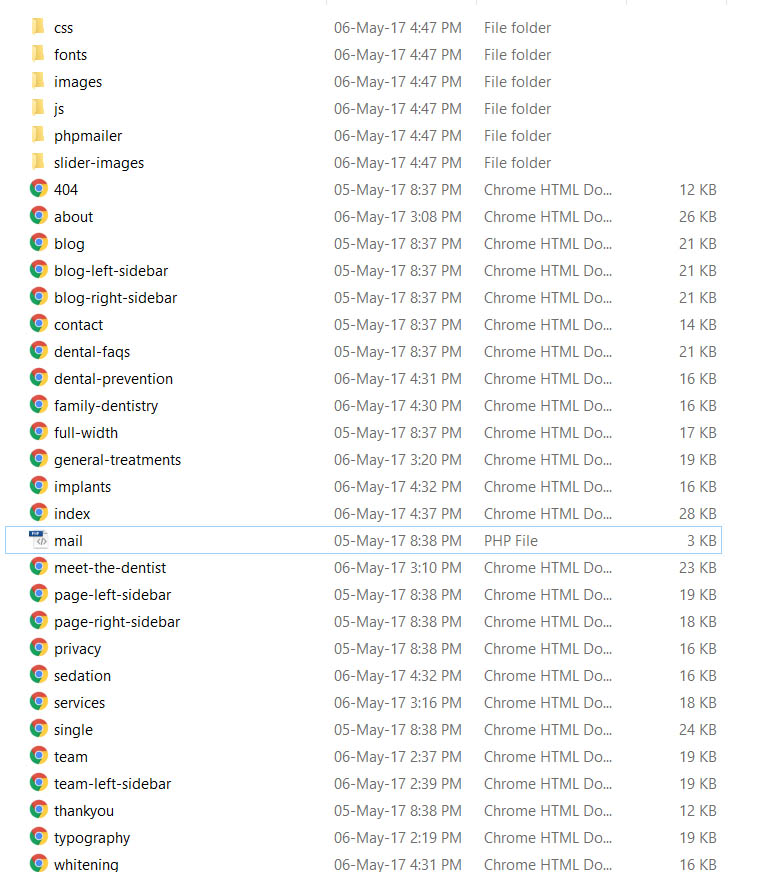

Dentologist - Perfect Theme for Medical Industry
Thank You! for purchasing Dentologist. In case you have any questions that are beyond the scope of this help documentation please feel free to contact us. We are more than happy to help you and get you going with Dentologist.
Dentologist is a responsive html5 template built by keeping in the industrial needs of Medical Industry. This template is built on Bootstrap 3.x and it is thoroughly tested, which means quality is guaranteed.
You can follow me to keep track of my theme updates and future themes. Thanks so much!
Creation Date: 06-May-2016
Proudly Created By: OpusThemes Team
Features List
Following is the Features List of this template
- 25 Beautiful HTML Pages
- Valid Markup
- Responsive Design
- HTML5 Standard
- Boostrap Framework
- Font Awesome Icons
- Responsive Owl Slider For Homepage
- Swiper Carousel
- Animations using Animate.css
- Two Column Layout
- Appointment Form Ready (using PHPMailer)
- Easy To Customize
- Well Commented Code
- SEO Ready
- And Lot More
Directory Structure
The files directory structure is easy to follow. Following is the snippnet of the files directory.

The files are organized in an easy to follow directory structure and the names of the directories and files are self-explanatory. All the images used as inside the images directory. Similarly all the Javascript files, css files and phpmailer files are in their respective directories. All the html files an at the root directory.
HTML Structure
Dentologist is build modularly i.e. it is easy to move one section from one page to another. Each HTML file is properly commented divided into sections. Each Section have starting and ending comments so that it is easy to customize and interchange sections from one page to another.
Following is the convention used in the HTML files
<html>
<head>
All the css files are included here along with page title and meta tags
</head>
<body>
Every Section Starts and Ends with a comment. For example header section starts and ends with the following Comments
<!--header section starts here-->
.
.
.
<!--header section ends here-->
</body>
</html>
Every file uses the same convention defined above. If you intend to move a section from one page to another simply copy the section from its starting comment to ending tag and you are done.
CSS Structure
Dentologist CSS files are organized in such a way that it remains easy to customize. The Css is broken into mainly two part i.e.
- Main StyleSheet (style.css)
- Responsive StyleSheet (responsive.css)
Main StyleSheet
The main stylesheet is properly commented as it is done in the case of HTML Files. There are bunch of comments about the css contents at the top of style.css file which is located inside css directory. Please refer to those comments for further details.
Responsive StyleSheet
All the responsive css code is inside this file which was needed to make sure that the template is run great on all devices seamlessly.
Home Page
Dentologist homepage is designed with great care and professionalism. It includes the OWL Slider which is responsive, the main intro section, call to action boxes, Icon Boxes, Our Team Section, Sliding Testimonails section and appointment form
Customizing the homepage is simple and it can be done with the help of your favourite text editor. Instructions about how to customization can be seen inside customization section
Customization
Dentologist is build in such a way that it is easy to customize and the sections are interchangeable. That means if you like a section on one page and want to move it to another one its easy to do. Follow the following steps for customization:
- Identify the file which want to edit.
- Open that file in your favourite text editor
- Copy the section with the comments as mentioned in the HTML Structure section.
- Open the file to which you want to move the copied section in your favourite text editor
- Paste the copied code snippet to the desired file.
- All Done!
FAQs
Q. I have found a bug. What should i do?
If you find a bug please report the bug and we will get it fixed for you as soon as possible.
Q. Are you available for helping to setup the Template?
As far as setting up the template is concerned the Opus Theme team will try to help to get the template up. However customization requests are not available.
Q. I bought theme by mistake or other. Is refunds available?
Only in rare cases according to the policy stated
Q. Are you available for Freelancing Work?
Yes we are available @ $50/hr.